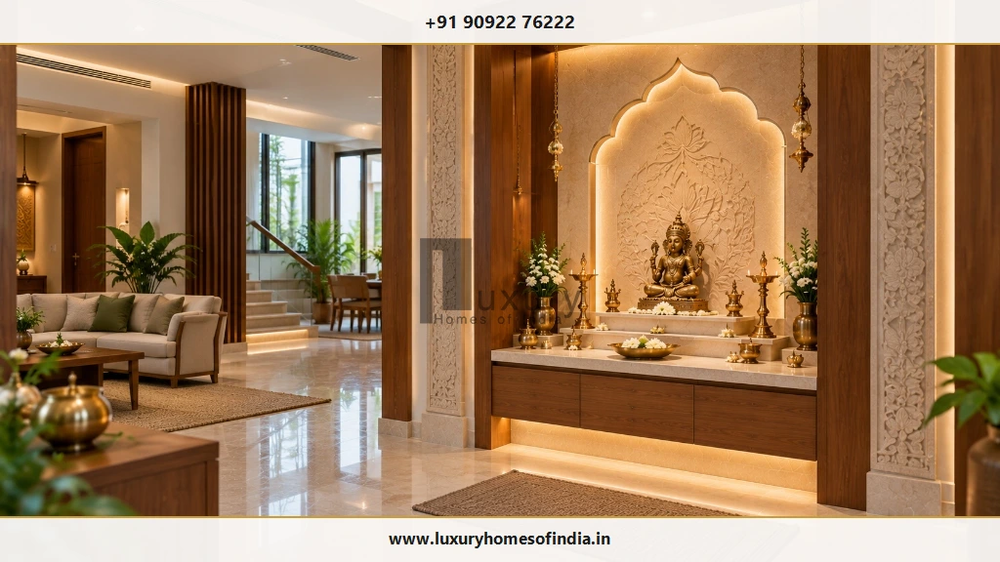
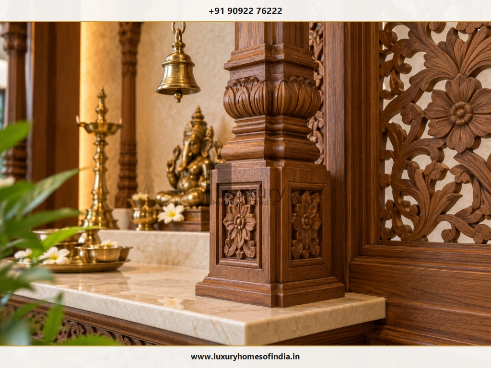
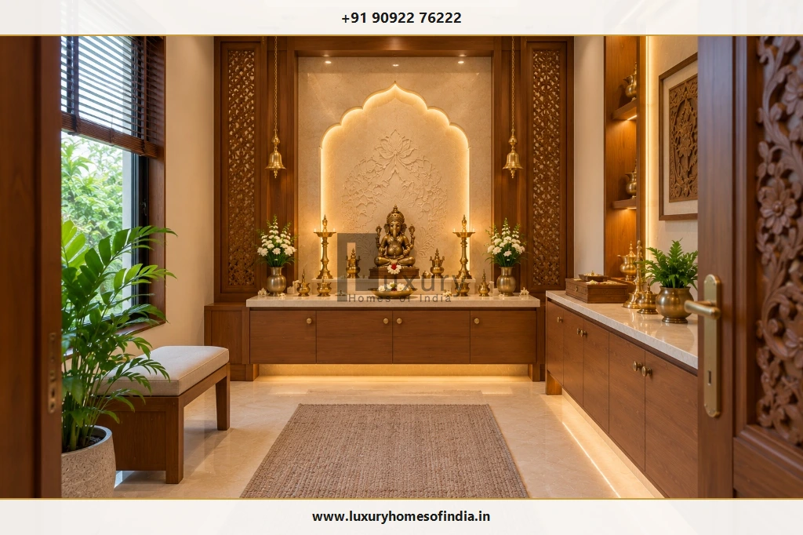
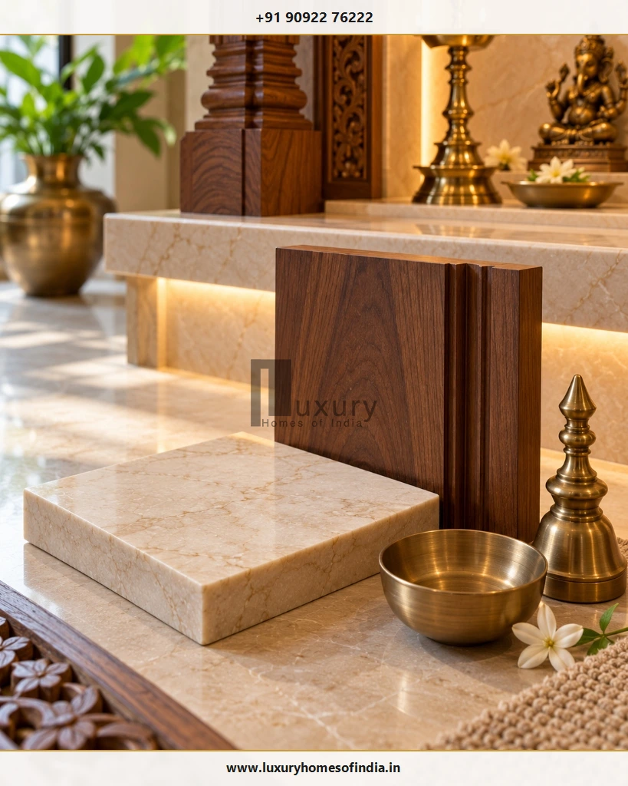
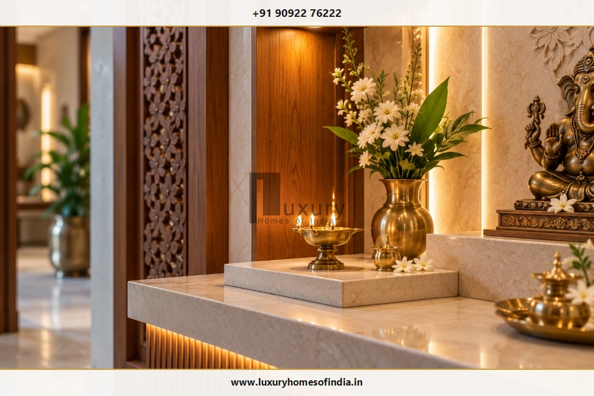

Executive Summary: Architectural Harmony in Luxury Home Temples
A luxury home temple should balance devotional traditions, architectural character and everyday practicality. Whether designing an expansive dedicated pooja pavilion within a private villa, an intricately carved teakwood shrine, a bookmatched marble altar or a tailored contemporary prayer niche, true luxury emerges from meticulous proportion, tactile craftsmanship, layered illumination and effortless maintenance.
When building a new custom villa in Chennai or across Tamil Nadu, integrating the mandir during early architectural design allows seamless coordination of structural dead loads, electrical conduit routing, DALI lighting scenes, smoke ventilation and family circulation before stone cutting and carpentry fabrication commence. In apartments, bespoke wall niches and floating cabinets preserve prime square footage while honoring spiritual traditions.
A luxury home temple should balance devotional traditions, architectural character and everyday practicality. The best design depends on whether you need a dedicated pooja room, a carved wooden mandir, a marble altar, a contemporary wall-mounted shrine or a compact prayer niche. Material selection, lighting, storage, ventilation and safe diya placement should be considered alongside appearance. In a new villa, planning the temple early allows the architect and interior designer to coordinate the altar, electrical points, cabinetry, wall finishes and circulation before fabrication begins. In an apartment, a carefully designed niche or cabinet can create a distinct prayer space without sacrificing usable floor area. For Indian homes, Vastu preferences may also influence the layout, depending on family traditions. This guide explains the main luxury home temple design options, the advantages and limitations of common materials, practical planning considerations and the decisions to resolve before installation.

1. Choose a Home Temple Design That Suits Your Space
The right mandir design starts with how the family worships, the available space and the surrounding architecture. Rather than imposing an arbitrary decorative style, begin by analyzing functional routines and spatial context.
Traditional Carved Wooden Mandir
Suits interiors that celebrate handcrafted detailing, ornamental arches and warm wood tones. Confirm the material, finish, cleaning access and safe separation from open flames.
Marble Mandir
Creates a light, stone-led focal point. Consider the stone's weight, stain sensitivity against oil and kumkum, joint details and long-term maintenance.
Contemporary Prayer Niche
Integrates into a wall or built-in composition. Particularly useful when floor area is limited and a separate room is unnecessary.
Dedicated Temple Room
Provides greater freedom for storage, rituals, lighting and architectural detailing, provided the floor plan accommodates the space comfortably.
Wall-Mounted Mandir
Keeps the floor clear and can combine an altar with enclosed storage. Wall construction and mechanical fixings must support the installed load.
How to Decide: Practical Assessment First
Start with the number of people who use the space, the rituals performed, the available floor and wall area, and the degree of privacy required. Select the style and finishes only after these practical needs are thoroughly mapped and understood.
2. Traditional Wooden Temple Designs
Wooden mandirs bring warmth, texture and opportunities for detailed craftsmanship into an Indian home. In South Indian temple traditions, finely seasoned woods such as Burma teak, Rosewood, and Indian Teak are revered for their structural stability and rich natural patina over generations.

Carved Pillars and Panels
Use carving to establish a clear visual identity without overwhelming the room. The scale of the detailing should relate harmoniously to the altar proportions, ceiling height and surrounding interior joinery.
Decorative Arches
An ornamental cusped arch or prabhavali can frame the primary deity and create a defined architectural focal point. Its profile and finish should coordinate with the interior rather than appearing as an unrelated decorative feature.
Custom Cabinetry
Bespoke joinery can accommodate prayer books, lamps, trays and festival accessories. Plan shelves and drawers around actual storage needs, with access for cleaning and maintenance.
Brass Accessories
Bells, deepams and selected metal details can complement timber finishes. Their placement must account for swinging clearances, regular handling and open-flame safety.
3. Marble Temple Design for Luxury Homes
Marble can create a distinctive altar or backdrop through its natural veining, colour variation and surface finish. From luminous pure white Makrana marble to softly veined Italian Statuario or Bottochino, stone conveys permanence, purity and architectural grandeur.
Marble Backdrop
A stone-clad wall can define the prayer area and establish a luminous focal point. Coordinate the slab layout, vein matching, dry-lay inspection, expansion joints, chamfered edges and concealed LED lighting channels prior to on-site installation.
Raised Altar
A raised stone platform visually distinguishes the shrine from general circulation floors. Its stepped dimensions should comfortably accommodate the intended idols, puja thalis, offerings and customary rituals without making the perimeter difficult to wipe clean.
Natural Marble versus Manufactured Alternatives
Natural marble possesses authentic organic veining, subtle translucency and tactile cool stone touch. Manufactured surfaces, including large-format sintered stone or vitrified porcelain slabs, offer alternative uniform patterns and enhanced chemical stain resistance against oils and turmeric. Compare the exact product specifications rather than assuming that two surfaces with a similar appearance will perform identically in a daily prayer setting.
Installation and Maintenance
Stone selection is only one part of the equation. Always calculate the combined substrate load, dead weight of heavy stone platforms, mechanical wall anchoring, penetrative stone sealers, and non-acidic cleaning regimens. Seek certified structural engineering advice where cantilevered stone shelves or multi-tiered marble altars are specified.
4. Contemporary Mandir Designs
A contemporary home temple can combine traditional devotional reverence with clean architectural lines, minimalist forms and innovative materials.
- Minimalist Altar: A clean-lined cantilevered stone platform, disciplined geometric proportions and a carefully selected backdrop create a tranquil sanctuary without visual clutter.
- Fluted or Textured Backdrop: Vertical timber fluting, bush-hammered granite, or textured acoustic wall finishes introduce tactile depth and shadow lines while maintaining flame safety clearances.
- Decorative Jaali Partition: A laser-cut metal or CNC-routed timber screen separates the prayer area from adjoining living or dining spaces while maintaining visual openness, daylight ingress and natural ventilation.
- Integrated Lighting: Concealed 2700K warm LED channels highlight the shrine's perimeter or rear panel. The specification must incorporate heat-insulated housings, accessible low-voltage drivers and strict electrical safety ratings.
Contemporary design works best when the architectural treatment supports the meditative purpose of the shrine instead of turning it into a purely decorative display.
5. Planning a Dedicated Pooja Room in a Villa
In an independent luxury villa or duplex, a dedicated pooja room provides unmatched flexibility for daily rituals, extensive storage, festive gatherings and fully coordinated architectural detailing.

Establish the Altar and Circulation
Determine the primary altar position, the floor area needed for worshippers during both seated and standing prayer, and the clear entry route into and through the room. Avoid placing cabinetry, prayer benches or doors where they obstruct natural movement.
Plan for Everyday and Festival Use
The space needed for quiet individual morning meditation differs significantly from family gatherings during festivals like Navratri, Janmashtami or housewarming ceremonies. Plan spatial zoning around your household's actual calendar of practices rather than designing solely for a static photograph.
Coordinate Storage
Include dedicated, organized storage for holy books, deepams, brass urlis, cotton wicks, incense boxes and festival idols. Separate frequently used daily items from annual ceremonial ornaments to maintain a serene, uncluttered altar counter.
Coordinate Services Early
Coordinate electrical points, dimmer switches, LED transformer access, smoke ventilation and nearby plumbing with your architectural team before structural drawings are finalized. Resolving these MEP services early prevents damaging stone cladding or joinery later.
Integrate the Room with the House
Coordinate the temple entrance doorway, flooring transitions, ceiling coves and timber finishes with adjacent corridors and living areas. The mandir can be architecturally distinctive while remaining an organic component of the overall residence.
6. Compact Home Temple Ideas for Apartments
A dedicated room is not essential for creating a well-considered, deeply reverent home temple in an apartment or compact urban residence.
Recessed Niche
Utilizes an existing or framed drywall recess to define the shrine. Always confirm available wall depth and verify that no hidden plumbing or electrical conduits are severed during execution.
Wall-Mounted Cabinet
Combines an elevated altar with concealed drawer storage while keeping 100% of the floor clear. Confirm mechanical anchor bolt ratings in masonry walls.
Built-In Temple Unit
Integrates the shrine smoothly into a larger custom living room or dining room credenza. Plan easy altar access, bi-fold doors, and service access for lighting drivers.
Screened Prayer Area
Employs an elegant CNC timber or brass screen to establish a sacred visual boundary without erecting dark, airless enclosed partition walls.
The most effective compact design gives the altar enough space for daily rituals while preserving clear circulation corridors and practical ergonomics.
7. Choosing Materials for a Premium Home Temple
Material selection should account for visual elegance, long-term durability, structural installation, ease of cleaning and safe everyday use.

| Material | Possible Application | What to Check |
|---|---|---|
| Natural Wood | Carved shrine frame, pillars, arches, jaali screens and storage cabinetry | Timber moisture specification, seasoning certification, fire-retardant clear sealer, and safe flame separation. |
| Marble | Altar platforms, deity pedestals, wall cladding and backdrop arches | Structural dead weight, wall support anchoring, stone porosity, and penetrative sealer protection against oil/turmeric stains. |
| Granite | Heavy-duty base platforms, aarti counters and floor borders | Surface finish (honed vs flamed), installed weight, superior heat resistance, and effortless maintenance. |
| Vitrified Slabs | Surrounding wall cladding or floor borders | Slip resistance ratings, joint layout, and compatibility with daily incense wiping. |
| Brass & Bronze | Lamps, temple bells, finials, urli vessels and custom hardware handles | Safe swinging clearances, protective lacquer coating to prevent rapid oxidation, and cleaning protocols. |
| Toughened Glass | Protective countertop covers, showcase panels and decorative inserts | Tempered safety specification, secure bracket support, and heat isolation from burning wicks. |
| Engineered Boards | Concealed interior storage, drawers and structural cabinetry framing | BWP/BWR marine grade specification, formaldehyde emission class, edge-banding sealing, and moisture resistance. |
No single material is automatically suitable for every component of a temple. Select products according to their intended mechanical and environmental use, and strictly adhere to supplier installation instructions.
8. Colour Palettes and Lighting Architecture
A considered palette connects the mandir to the surrounding interior without making it visually overpowering, while thoughtful lighting design accentuates the sacred focal point.
| Palette Combination | Design Character | Works Best With |
|---|---|---|
| Ivory, White & Brass | Light, luminous and understated | Makrana marble, pale quartz, and restrained contemporary joinery. |
| Timber, Cream & Brass | Warm, regal and traditional | Carved solid teakwood, brass temple deepams, and classic heritage villa layouts. |
| Beige & Muted Metallic Accents | Quiet, grounded and contemporary | Minimalist cabinetry, fluted stone wall claddings, and textured wall coverings. |
| Walnut & Polished Ivory | Contrasting, dramatic and architectural | Dark walnut joinery paired with an illuminated, pure white marble altar backdrop. |
Always review physical material swatches under the exact proposed lighting conditions before making final selections. Stone, wood grains and metallic sheens appear drastically different in morning sun versus 2700K artificial light.
A Practical 4-Layer Lighting Architecture
- Ambient Lighting: Soft, indirect 2700K cove illumination provides safe general visibility across the room for family movement and routine cleaning.
- Accent Lighting: Concealed warm LED profiles highlight the altar silhouette, arched niches and stone carvings without exposing the light source to seated worshippers.
- Task Lighting: Focused, low-glare downlights positioned over the aarti counter make reading holy scriptures and handling brass trays effortless.
- Natural Daylight: Eastern or northern daylight breathes life into the space. Ensure appropriate solar shading, double glazing and privacy blinds are integrated.
9. Vastu Considerations for Home Temple Placement
Many Indian homeowners consider Vastu Shastra principles when planning a pooja room. In classical architectural tradition, the north-east sector (Ishanya Kona) is commonly preferred, while east and north orientations are also considered in various regional interpretations.
Pre-Construction Vastu Checks
- Confirm the room's actual compass orientation on the survey layout.
- Discuss the family's customary worship arrangement: facing east or north during prayer.
- Coordinate altar depth and deity heights relative to seated and standing eye levels.
- Review circulation flow, acoustic privacy and unobstructed accessibility.
- Check adjacent services: ensure the mandir does not share a common wall with bathrooms or sit beneath plumbing stacks.
- Never compromise core structural engineering safety or basic practical functionality to pursue an abstract orientation.
For comprehensive directional guidelines, idol placement heights, and apartment niche layouts, read our dedicated companion guide: Pooja Room Placement as per Vastu: Best Direction, Idol Position and Planning Tips.
10. Diya Safety, Ventilation and Maintenance
A luxury prayer space must remain completely safe and effortless to maintain during daily worship involving open flames, hot oil, camphor and incense.

Core Temple Safety Protocols
- Stable, Heat-Resistant Platforms: Place oil lamps only on marble, granite or brass trays—never directly onto bare wood or synthetic laminates.
- Combustible Separation: Keep open flames strictly away from woodwork, loose curtains, wall tapestries, and electrical switches.
- Vertical Clearances: Avoid placing burning lamps beneath overhanging wooden shelves or inside enclosed cabinets.
- Ventilation & Smoke Management: For enclosed pooja rooms where incense or dhoop is burned regularly, integrate a quiet ceiling exhaust fan to maintain indoor air quality.
- Prompt Oil Cleanup: Wipe spilled oil or ghee immediately using non-acidic micro-fibre cloths to prevent stone discoloration and slip hazards.
- Unattended Flame Hazard: Never leave burning wicks or camphor unattended when stepping away or leaving the residence.
11. Understanding the Cost of a Luxury Home Temple
There is no single fixed price for a luxury home temple. The final investment depends on dimensions, architectural complexity, stone selection, artisan carving, custom joinery, specialized lighting and MEP installation scope.
To obtain an accurate and transparent budget, request an itemised quotation covering:
- Shrine or altar structural fabrication
- Natural stone slabs, quarry selection and CNC cutting
- Hand-carved woodwork, teakwood pillars and custom joinery
- Decorative backdrop panels (carved stone, onyx, brass trims)
- Cast brass hardware, bells, finials and hanging accessories
- Concealed LED profiles, high-CRI drivers and automation dimming
- Storage cabinetry with soft-close hardware and partitioned drawers
- Freight, specialized crating, on-site lifting and mechanical anchoring
- Surface sealers, protective stone impregnation and timber lacquer
- Dedicated silent smoke exhaust and electrical safety isolators
Always compare contractor proposals against identical architectural drawings, material specifications, quantities and scopes of work. Clarify warranty terms and maintenance requirements before approving fabrication.
12. Common Temple Design Mistakes to Avoid
Prior to signing off on carpentry and stonework drawings, cross-examine your plans against these common oversights:
13. Home Temple Planning Checklist
Before fabrication begins, review these 12 critical milestones with your architect and interior design team:
Frequently Asked Questions
Conclusion: Crafting a Timeless Sanctuary for Generational Peace
A well-designed luxury home temple brings together devotional use, architectural detailing and practical planning. Traditional carved wood, a marble altar, a contemporary niche or a dedicated pooja room can all work well when the design suits the home's layout and the family's rituals.
Resolve the altar dimensions, materials, storage, lighting, ventilation and safety requirements before fabrication begins. For a new villa or a major interior project, coordinate the temple with the wider architectural and interior design process rather than treating it as a last-minute decorative addition.
Planning a Luxury Home or Villa in Chennai?
Collaborate with Luxury Homes of India's architectural and interior design teams to craft an exquisite, Vastu-harmonious home temple custom-tailored to your family's heritage and architectural vision.